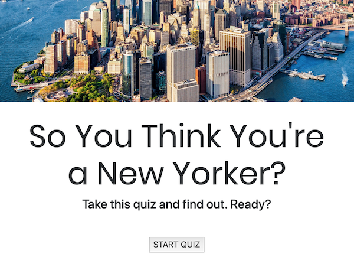

Test Your Knowledge
So many people who move to New York want that coveted title of New Yorker, but New York is more than the "city that never sleeps." It has a rich history. As someone who grew up in Queens, I wanted to pay tribute to the city that I love, so I created this quiz for people to see if they can truly call themselves a New Yorker.
Tech Stack: Python, Flask, HTML, CSS, Heroku
Process: The easy part was compiling the questions and answers. I had to figure out if I should use a Class object, a list, or a dictionary. I ultimately decided on a list of dictionaries. The quiz is composed of a total of 8 questions but I needed a larger pool of questions to keep the game fresh if the user played multiple times. Questions also had to be randomized, while ensuring the question did not repeat during the quiz session. This was the first challenge to solve.
I knew coming into the project that I didn't want to have users log-in. It was meant to be a simple quiz, and while I could use a database to store scores and user data, I chose not to. This presented the next big challenge. I needed the program to remember the state in order to keep track of what questions had been asked, which question the user was on, and record user responses. Random.seed() was the perfect solution for both of these issues.
Other considerations included the form for the multiple choice questions and unique messages based on the total tally of the user's score. I opted to not use any form libraries, but instead built out the form in HTML. Once everything was working correctly, the last part was the look of the quiz. I applied CSS and focused on simple and clean styling.